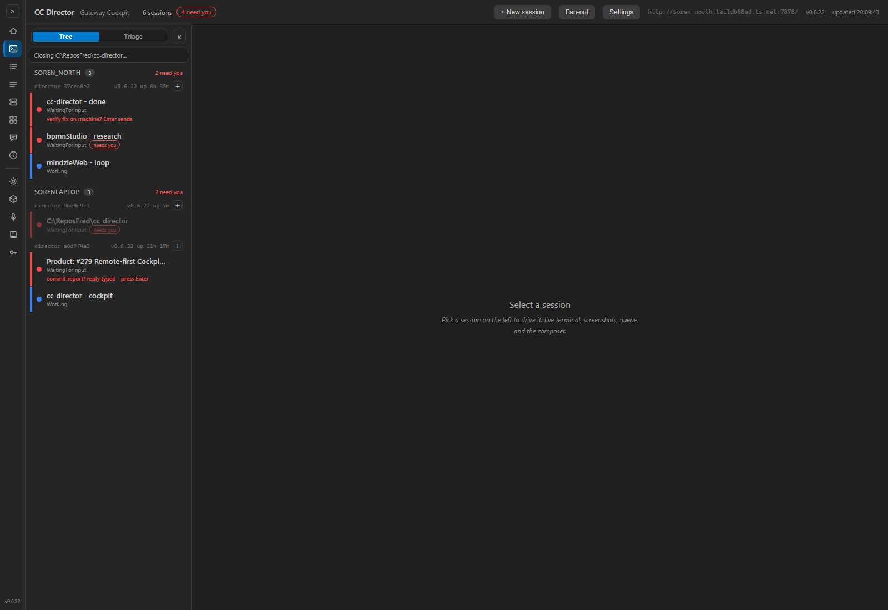
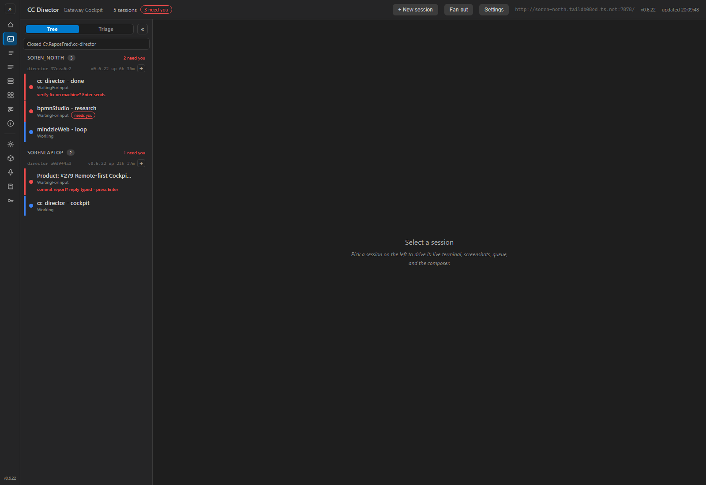
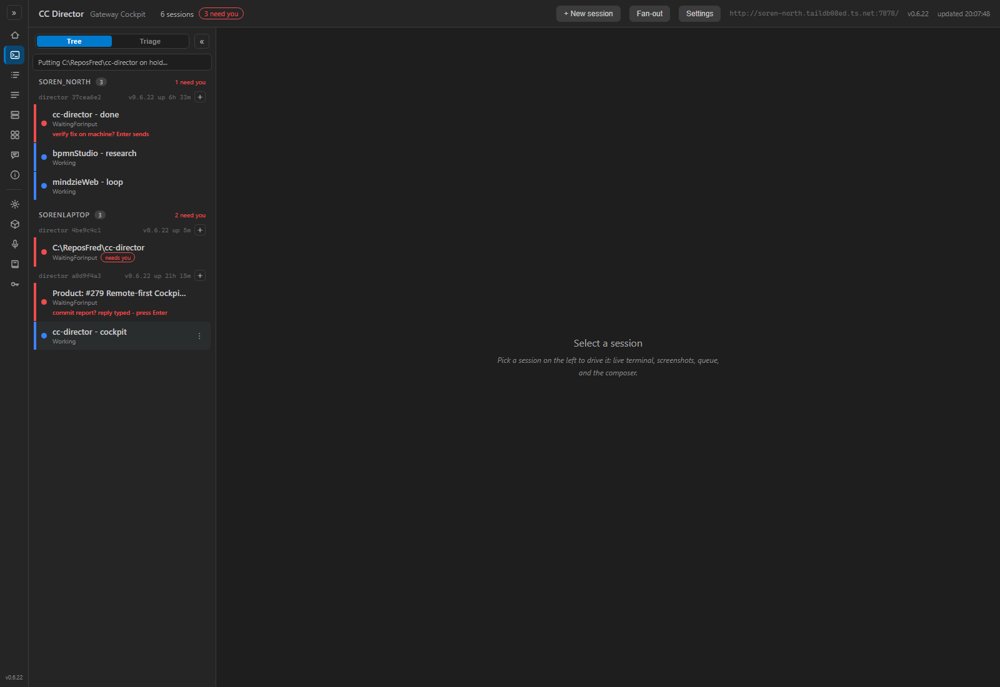
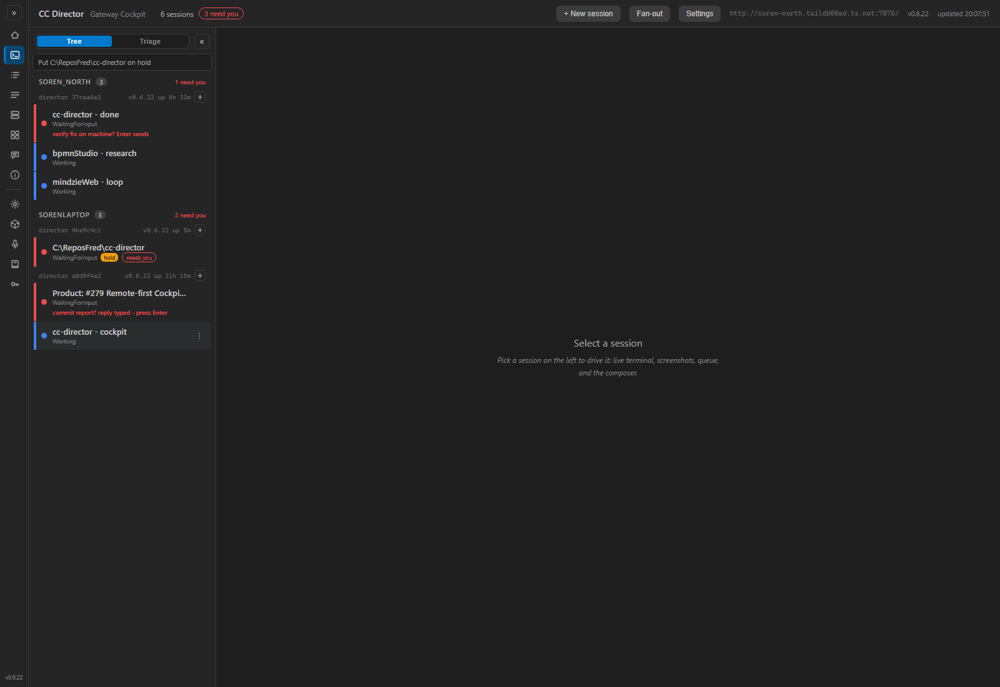
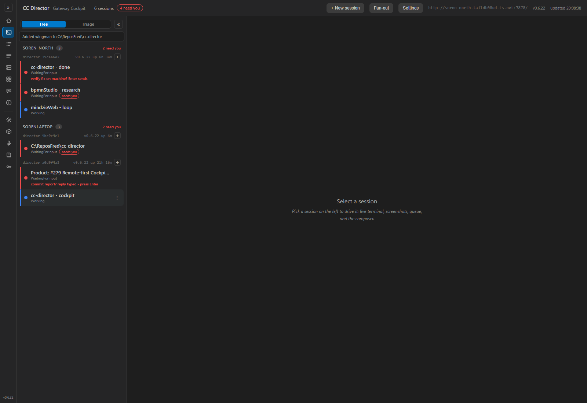
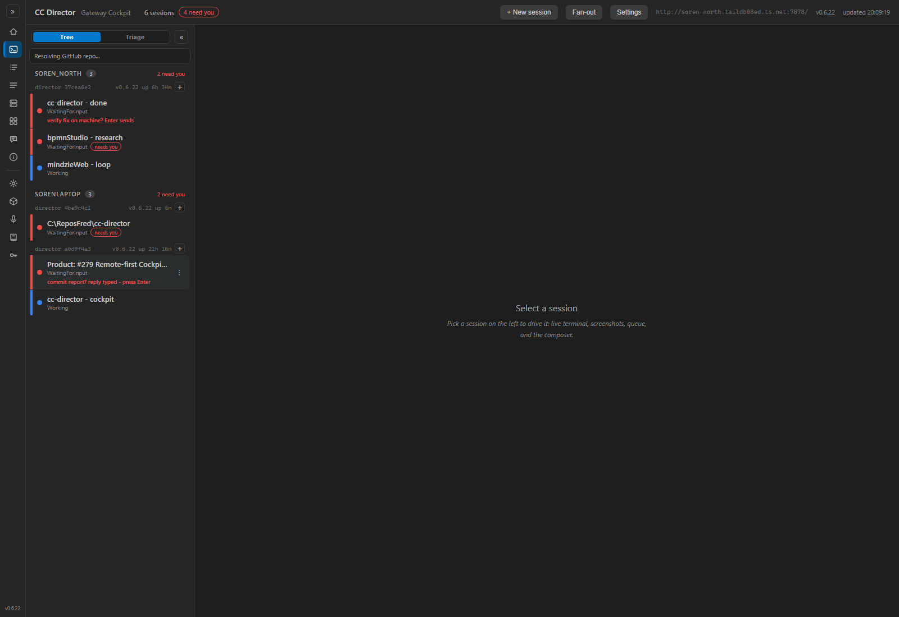

QA Agent independent verification · branch issue-228-rail-action-feedback
· PR #305 · CenCon Development Method
The QA Agent did NOT reuse the Developer's binary or screenshots. The PR branch was built fresh to
slot 5 (scripts\local-build-avalonia.ps1 -Slot 5 → 0 warnings, 0
errors) and launched via the cc-director-launch scheduled task (PID 54160, Control API
http://127.0.0.1:7884). A real Cockpit instance was run from the PR
source (dotnet run on CcDirector.Cockpit, listening on
http://localhost:7470) pointed at the live Gateway, and driven with Playwright
(Chromium).
A dedicated test session was created on the slot-5 Director only (directorId prefix
4be9c4c1, rail label C:\ReposFred\cc-director); every action was performed
against that session only - never the user's other sessions (CLAUDE.md rule 0).
Because the rail-notice transitions are fast (the Director round-trip is milliseconds for
hold/wingman/issue), a MutationObserver recorded every .rail-notice text
change with millisecond timestamps, proving the in-progress notice rendered before the
result notice rather than after. The Close teardown took ~5s, giving a wide window directly
screenshotted.
| # | Criterion | Expected | Actual (observed) | Result |
|---|---|---|---|---|
| 1 | Close shows Closing <title>... + dimmed row in the same render,
then Closed <title> and the row is gone. |
In-progress notice + dimmed row before teardown; result notice + row removed after. | Across all 10 capture frames during the ~5s teardown the rail-notice read
Closing C:\ReposFred\cc-director... AND my row carried class
sess-closing (dimmed to .45, visibly faded vs sibling rows). Timeline:
t+741ms Closing... → t+5841ms Closed C:\ReposFred\cc-director.
After reconcile the row was gone (session count 6→5, the slot-5 director group removed);
slot-5 Control API confirmed 0 sessions. | PASS |
| 2 | Hold/un-hold shows Putting/Taking ... hold... immediately, then the
existing result; pill ends correct. |
In-progress notice first, result second, hold pill set/cleared. | Hold on: t+382ms Putting C:\ReposFred\cc-director on hold... →
t+589ms Put ... on hold; orange hold pill appeared on the row.
Off hold: t+401ms Taking ... off hold... → t+428ms Took ... off
hold; pill cleared. | PASS |
| 3 | Wingman shows Updating Wingman for ... immediately, then the existing
result. |
In-progress notice first, result second. | Add: t+380ms Updating Wingman for C:\ReposFred\cc-director... →
t+383ms Added wingman to .... Remove: t+377ms Updating Wingman for ...
→ t+386ms Removed wingman from .... | PASS |
| 4 | New GitHub Issue shows Resolving GitHub repo... immediately, then
opens the issue tab as today. |
In-progress notice, then new-issue tab for the repo. | t+376ms Resolving GitHub repo...; a new tab opened to
github.com/thefrederiksen/cc-director/issues/new (login redirect because the
headless browser is unauthenticated - the resolved URL is the correct repo's new-issue
form). | PASS |
| 5 | No regression: every action's end state matches today's after the reconcile poll. | Hold pill toggles, wingman toggles, issue tab opens, session closes and is removed - all unchanged. | All end states matched prior behavior: hold pill on then off, wingman added then removed, issue tab opened, session torn down and dropped from the roster. No adjacent row or control was disturbed (negative sweep of every screenshot clean). | PASS |
AC1 Close - during (notice Closing ... + dimmed slot-5 row) and
after (Closed ..., row gone, count 6→5):


AC2 Hold - during (Putting ... on hold...) and after
(Put ... on hold + orange hold pill):


AC3 Wingman - during (Updating Wingman for ...) and
AC4 New GitHub Issue - during (Resolving GitHub repo...):


CcDirector.Cockpit
container. No architecture or security-posture change; no DT-rule in
security_profile.yaml touched; no docs/cencon/ doc needs updating.dotnet build cc-director.sln → Build succeeded,
0 Warning(s), 0 Error(s); slot-5 publish → 0/0.